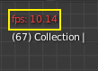

Timeline¶
The Timeline editor, identified by a clock icon, is used for manipulating keyframes and scrubbing the playhead.

时间轴。
The Timeline gives the user a broad overview of a scene's animation, by showing the current frame, the keyframes of the active object, the start and end frames of your animation sequence, as well as markers set by the user.
The Timeline includes Transport Controls, to play, pause, and skip through an animation sequence.
It also includes tools for manipulating Keyframes, Keying Sets, and Markers.
主视图¶
主 时间轴 区域随时间显示动画帧。

Here you can see the Keyframes (diamond shapes), Playhead (blue handle), Scrollbar (along the bottom),
调整视图¶
你能够按住 MMB 左右拖动平移时间轴。
你能够按住 Ctrl-MMB 移动鼠标缩放时间轴，也能够直接使用 Wheel 或按 NumpadMinus 和 NumpadPlus 缩放时间轴。
You can also use the scrollbars, located at the bottom or the right of the editor, to pan and zoom the view.
Playhead¶
The Playhead is the blue vertical line with the current frame number at the top.

Playhead.
The Playhead can be set or moved to a new position by pressing or holding LMB in scrubbing area at the top of the timeline.
The Playhead can be moved in single-frame increments by pressing Left or Right, or you can jump to the beginning or end frame by pressing Shift-Left or Shift-Right.
Frame Range¶
By default, the Frame Range is set to start at frame 1 and end at frame 250. You can change the frame range in the top right of the Timeline header, or in the Output Properties.
关键帧¶
For the active and selected objects, keyframes are displayed as diamond shapes.
You can click to select one at a time, or select several by holding Shift, or by dragging a box around the keyframes. You can then move single keys by dragging them, and you can move multiple keys by pressing G and scale them with S.
Only Selected Channels can be enabled. . For Armatures, this will display the object keyframes, and the keyframes for the active and selected pose bones.
标题栏¶
Popovers¶
Playback Popover¶

The Playback popover contains options controlling the animation playback.
- Sync Mode
- 
3D视图红色帧速率（FPS）。
54.75When you play an animation, the frame rate is displayed at the top left of the 3D View. If the scene is detailed and playback is slower than the set Frame Rate (see 尺寸面板), these options are used to synchronize the playback.
- 不同步
- 不同步, 播放每一帧。
- 帧优化
- 如果帧显示太慢，回放丢掉部分帧，来优化播放。
- 音视频同步
- （音频视频同步）。同步到音频时钟，如果播放速度慢，则会丢掉部分帧，用于优化播放
- 滑音
- If your animation has sound, this option plays bits of the sound wave while you move the playhead with LMB or keyboard arrows (like a moving playhead).
- Mute Audio
- Mute the sound from any audio source.
- Subframes
- Display and allow changing the current scene sub-frame.
- Limit Playhead to Frame Range
- Don't allow selecting frames outside of the playback range using the mouse.
- Follow Playhead
- 动画编辑器可以设置为始终在播放动画时遵循时间指针。以下将在动画和改变帧时完成。当光标到达屏幕的末端，显示相同宽度的下一段关键帧。
- Active Editor Only
- While playing, updates the Timeline, if Animation Editors and All 3D Viewports disabled.
- All 3D Viewports
- 在播放时更新3D视图和时间轴。
- 动画编辑器
- While playing, updates the Timeline, Dope Sheet, Graph Editor, Video Sequencer.
- 属性编辑器
- 当动画播放时，这将更新UI中的属性值。
- 图像编辑器
- The Image editor in Mask mode.
- 序列编辑器
- While playing, updates the Video Sequencer.
- 节点编辑器
- While playing, updates the Node properties for the node editors.
- 影片剪辑编辑器
- 播放时更新影片剪辑编辑器。
Keying Popover¶
The Keying popover contains options that affect keyframe insertion.
- 活动插帧集

时间轴插帧集。
插帧集 是一组关键帧通道。它们是用于用户可以同时记录多个属性。选择关键帧组合后，当你插入关键帧时，Blender将为活动 插帧集 中的属性添加关键帧。有一些内置的关键帧组合，LocRotScale 以及自定义关键帧组合。可以在面板中定义自定义插帧集设置 。
- 插入关键帧（加号图标）
- 在当前帧插入当前关键帧组所中包含属性的关键帧。
- 插入关键帧（减号图标）
- 在当前帧删除当前关键帧组所中包含属性的关键帧。
- 新建关键帧类型
- 关键帧类型 on insertion.
- 自动插入关键帧模式
控制自动插入关键帧模式的运行。每个时刻只能用一种模式。
- 添加&替换
- 添加或者替换已有关键帧。
- 替换
- 仅替换已有的关键帧。
- Auto Keying Set (two keys icon)
- 启用 自动关键帧 时将为活动 插帧集 中的属性自动插入新的关键帧。
- Layered Recording
- 为动画上的每个循环/通道添加一个新的NLA追踪和Strip，以便进行无损调整。
- Cycle-Aware Keying
When inserting keyframes into trivially cyclic curves, special handling is applied to preserve the cycle integrity (most useful while tweaking an established cycle):
- If a key insertion is attempted outside of the main time range of the cycle, it is remapped back inside the range.
- When overwriting one of the end keys, the other one is updated appropriately.
菜单¶
视图菜单¶
视图菜单 控制着你看到的一切，以及他们的样式。
- 显示秒数 Ctrl-T
- Whether to show the time in the X axis and the Playhead as frames (based on the FPS) or as seconds.
- 锁定时间到其他窗口
- It synchronizes the horizontal panning and scale of the current editor with the other editors (Graph, Dope Sheet, NLA) when this option is set. That way you always have these editors showing an identical part of the time you work on.
- 显示帧数值
- This will display the current frame or seconds on the Playhead.
- 仅选择的通道的关键帧
- For Armatures, this will display the object keyframes, and the keyframes for the active and selected pose bones.
- 缓存
- 显示缓存
显示所有启用的缓存类型。
软体，粒子，布料，烟雾，动态绘图，刚体。

时间轴缓存。
- 查看全部 Home
- 根据动画范围最大化区域。
- 查看帧 Numpad0
- Centers the Timeline to the Playhead.
- 将摄像机绑定到标记 Ctrl-B
- 这能用来在动画进行过程中切换照相机，要将照相机绑定到特定的标记，首先选择一个相机，然后选择一个标记，然后使用该工具。
标记菜单¶
Markers are used to denote frames with key points or significant events within an animation. Like with most animation editors, markers are shown at the bottom of the editor.

动画编辑器中的标记。
For descriptions of the different marker tools see Editing Markers.
标题栏控制按钮¶
时间轴的标题栏控制按钮。

时间轴的标题栏控制按钮。
Transport Controls¶
These buttons are used to set, play, rewind, the Playhead.
Transport controls.
- 跳转到开头(⏮) Shift-Ctrl-Down 或 Shift-Left
- 这将时间指针设置为帧范围的开始。
- 跳转到上一个关键帧（⏪︎）
- 这将时间指针设置为上一关键帧。
- 倒放 (◀) Shift-Alt-A
- 这在反向播放动画序列。播放播放按钮时切换到暂停按钮。
- 播放 (▶) Alt-A
- 这将播放动画序列。播放播放按钮时，切换到暂停按钮。
- 跳转到下一个关键帧(⏩︎) Up
- 这将光标设置为下一个关键帧。
- 跳到结尾（⏭）。 Shift-Ctrl-Up, Shift-Right
- 这将光标设置为下一个关键帧。
- 暂停 (⏸) Alt-A
- 这将停止动画。
Frame Controls¶
- 当前帧 Alt-Wheel
- The current frame of the animation/playback range. Also the position of the Playhead.
- Preview Range (clock icon)
- This is a temporary frame range used for previewing a smaller part of the full range. The preview range only affects the viewport, not the rendered output. See 预览范围.
- 起始帧
- 动画 / 播放范围的起始帧。
- 结束帧
- 动画 / 播放范围的结束帧。
关键帧控制¶
- 自动关键帧

时间轴自动关键帧。
The record button enables Auto Keyframe: It will add and/or replace existing keyframes for the active object when you transform it in the 3D View.
For example, when enabled, first set the Playhead to the desired frame, then move an object in the 3D View, or set a new value for a property in the UI.
When you set a new value for the properties, Blender will add keyframes on the current frame for the transform properties. Other use cases are Fly/Walk Mode to record the walk/flight path and Lock Camera to View to record the navigation in camera view.
Note
需要注意的是 自动关键帧 只适用于3G视图中的变换属性（物体和骨骼），（即，你不能在例如属性编辑器中使用它来动画材质的颜色......）。